はじめに
地震大国と言われる日本。
国土特有の地形において、全国で頻繁に地震による被害が発生しています。
地震のみではなく、台風や津波、竜巻、土砂災害、大雪、雪崩...
災害はある日、突然やってきます。
"その時"あなたはどこにいるでしょうか？
職場？デパート？電車や地下鉄？はたまた、旅先の旅館？
"その時"あなたは何を考え、どう行動すれば良いのでしょうか？
"守るべきもの"がある人は大勢いらっしゃいます。
災害について "知る"ことで "守る" ことに繋げる必要があります。
そして、次の世代に"語り継ぐ" ・ "受け継ぐ"必要もあると思います。
このアプリは、国や地方公共団体のオープンデータを用いて、いざという時の強力な"ツール"になるべく、開発しました。
スマートフォンが普及した現在、本アプリをハンドブック的な位置づけとして使用していただければと思います。
ご家族と防災について話したり、ご友人と情報共有したり、使い方は人ぞれぞれだと思います。
そして、日本という国で暮らしていく中で、大きな課題があります。
私たちは、この台地・自然とどのように向き合って生きていけば良いのでしょうか？
少しでも皆さんのヒントとなり、お役に立てられれば幸いにございます。
by 仁志.
学習ツール
防災について学ぶ学習ツールを用意しました。
事前準備
避難時
帰宅後
さらに詳しく
×
持ち出しリスト
避難時に持ち出す必要があるものをリストにしました。避難時に必要なものを確認しましょう。
貴重品
10円玉は公衆電話用に必要
避難用具
懐中電灯は1人1つ用意しよう。
生活用品
避難所生活に最低限必要。家族構成（赤ちゃんや高齢者の方々）を考えて用意しよう。
救急用具
持病をお持ちの人は薬は必ず持っていこう。感染予防のため、マスク・アルコールも揃えよう。
非常食品
最低3日分は容易しよう。そのままで食べられるものが便利。
衣料品
避難が長引くと衣料品もある程度必要になります。
その他
季節に応じて持ち物を揃えよう。ゴミ袋は、持ち物としてかさばらず、防寒やレインコート代わりに使えるなどの応用も可能です。
以下の資料をもとに仁志が加工・編集して作成しました。
・わたしの防災サバイバル手帳、消防庁
×
活断層マップ
通常は地表に現れている断層と認められる地形のうち、今後も活動しそうな（＝地震を発生させるような）ものを活断層といいます。
活断層マップでは、震源地の緯度・経度を入力することで、活断層と震源地の関係を視覚化することができます。
以下の資料をもとに仁志が加工・編集して作成しました。
・わたしの防災サバイバル手帳、消防庁
・気象庁ウェブサイト
×
安否確認
災害時には、必ずしも家族と一緒にいるとは限りません。別々に避難することも十分考えられます。こういった時に「安否確認」が必要になります。日頃からどのように確認し合うのか、学校や職場の連絡先も共有することが大切です。
帰宅困難者
≪帰宅の判断≫
遠距離を無理に帰宅しようとすると、却って二次災害を引き起こす恐れがある。 むやみに移動しない。
家族の安否確認を行う。
≪帰宅方法≫
地震が起きると普段通っている道路も通行困難になる。普段から自分で帰宅ルートを歩くなどして、道路の状況を確認しておく。
夜は特に足下が見えにくく危険！特に自宅まで遠距離の人は時間帯も考えて行動する。
災害時には、情報提供などを行う帰宅困難者支援施設として、学校や公共施設、コンビニエンスストア、ガソリンスタンドなどが指定されるケースが増えている。これらの施設も併せて確認しておく。
「災害用伝言ダイヤル171」
阪神・淡路大震災の時は、停電の影響等から約30万回線が不通になりました。また、全国から神戸方面に通常ピーク時の50倍程度の通話が集中し、電話がつながりにくくなりました。
「家族や友人にとにかく連絡をとりたい」そんなときのために、「災害用伝言ダイヤル171」の使い方を覚えておきましょう！
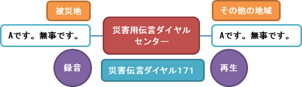
今、ここにいるよ。
「今、ここにいるよ。」は災害時に自分の居場所を家族や友人に知らせることができる安否確認サービスです。GPS機能が搭載されており、SNSと連携して使用することができます。
以下の資料をもとに仁志が加工・編集して作成しました。
・わたしの防災サバイバル手帳、消防庁
・防災マニュアル、消防庁
×
調査・報告
災害が起きた後、各自治体職員が地域を回り、被害情報の収集に努めます。対策本部に報告し、罹災証明書の発行手続きを進めるためです。
報告
各自治体が調査に来た際、どんな被害があったのか、報告してください。
≪被害の例≫
・家屋の被害
瓦が落ちた、床下浸水、雨漏り、トタン屋根が剥がれた、家が傾いた...など。
・庭、駐車場の被害
庭の木が折れた、車のカーポートが剥がれた、倉庫が崩れた...など。
修理や片付けをする前に、写真などで記録に保存しておくことも大切です。各自治体職員に報告する前に修理してしまうと、後になって、罹災証明書を発行できないなどのトラブルが起きる可能性があります。
罹災証明書
台風、豪雨による浸水被害、火災などによる住家被害があり、火災保険などを使用する場合、保険会社から罹災証明書の提出が求められる場合があります。お住まいの自治体に問い合わせて、罹災証明書の交付手続きを行いましょう。
市町村長は、当該市町村の地域に係る災害が発生した場合において、当該災害の被災者から申請があつたときは、遅滞なく、住家の被害その他当該市町村長が定める種類の被害の状況を調査し、罹災証明書（災害による被害の程度を証明する書面）を交付しなければならない。（災害対策基本法第90条の2）
身の回りの被害状況について
自宅周りの近隣にも被害があれば、各自治体に報告するのが大切です。また、お店の看板が倒れているなどした場合、お店に知らせてあげることも大切です。
≪被害の例≫
・公共物
電信柱が傾いている、道路にひび割れがある、信号が光っていない、マンホールが隆起している、道路標識が折れている...など。
・民間の建物
お店の看板が傾いている...など。
次の防災へ
災害の傾向
災害は単発で起きるのではなく、複数の災害がたて続けに起きる傾向にあります。
≪複数の災害の例≫
・地震が起きた後に津波発生
・火山噴火後の地震
・集中豪雨の後に台風が通過し洪水発生
２度、３度と災害が起きると被害が酷くなる場合があります。次の災害に備えて、雨漏りの修復や補強に努めましょう。
×
災害の種類
災害にはどのようなものがあるでしょうか？
災害について "知る" ことが "守る" ことに繋がります。
目 次
地 震
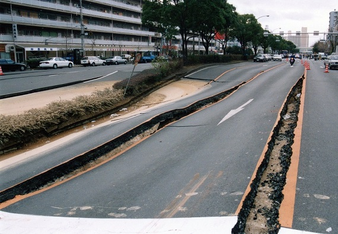
（写真提供：神戸市）
メカニズム
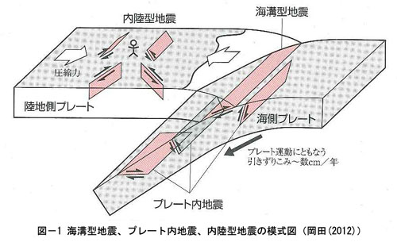
（写真提供：国土地理院ウェブサイト）
・海溝型地震
海底にあるプレートとよばれる板のような岩盤が、地球の運動によりひずみ、ずれることによって起こる。
・プレート内地震
沈み込む海のプレート内部で発生する。
・内陸型地震
内陸にある活断層とよばれる地面の裂け目が動いて起こる。
震度とマグニチュード
・震度
その場所での地震の揺れを表す。日本で使われる言い方で、10階級に分かれる。
・マグニチュード
震源での地震エネルギーの規模を表す。マグニチュードが１増えるとエネルギーは32倍になる。
余震
大地震が発生した後は、余震が続くことが多い。余震とはいえ、強い揺れが起こる恐れがあるので、注意が必要である。
液状化現象
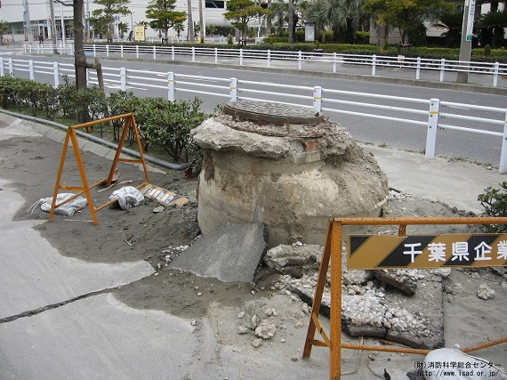
（写真提供「災害写真データベース」、東日本大震災、浦安市高洲地区マンホール被害）
大地震が発生した場合、水分を含んだ地盤が崩れ、液状化する液状化現象が起こる場合がある。
気象庁震度階級関連解説表
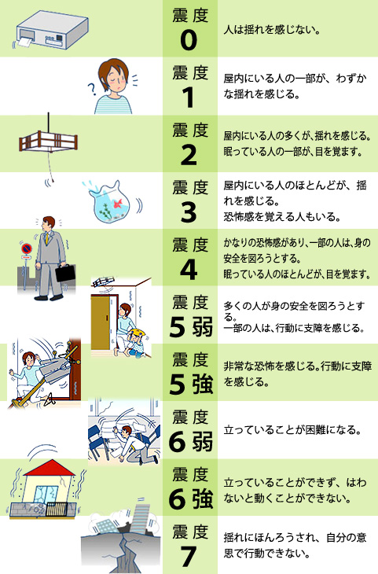
（出典「防災マニュアル」消防庁、気象庁HP）
地震防災INSIGHT
家にいる時
・机やテーブルの下にもぐる等して頭を守る！
学校の避難訓練を思い出そう。
・地震の次は火災に注意！
揺れがおさまったら、火の始末を忘れずに！
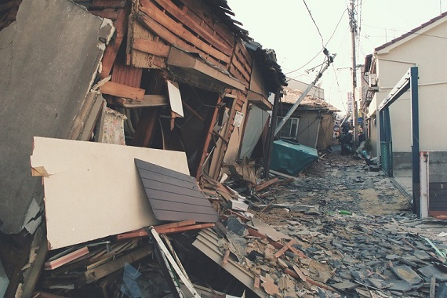
（写真提供：神戸市）
・慌てて外に飛び出さない！
瓦や看板が落ちてくる、ガラス等の破片が刺さる危険がある。
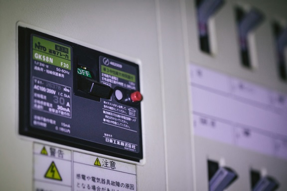
・避難する時は、電気のブレーカーを一旦切る！
電気が復旧した時に火災が起こる危険性がある。
・正しい情報を入手する。
テレビ、スマホのニュース、ラジオなどから発表される信頼できる情報を頼りに、落ち着いて行動する。
外にいる時
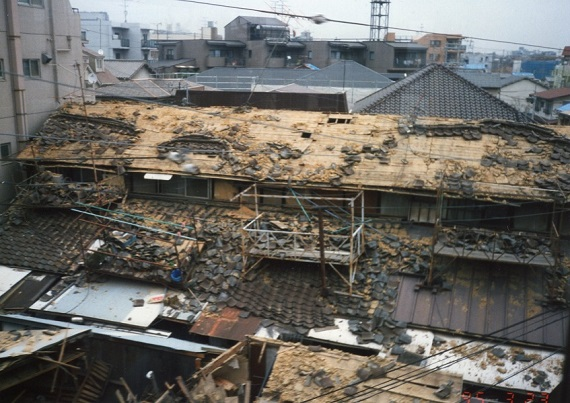
（写真提供：神戸市）
・落下物に注意！
瓦が落ちてきたり、ブロック塀が壊れたり、ビルの看板が落ちてくる可能性がある。
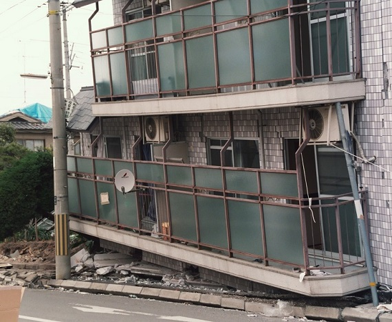
（写真提供：神戸市）
・余震に注意！
大地震の後は、余震が続く傾向にある。余震といえ、強い地震が発生する場合があるので、倒れかけた建物には近づかない。
・電車に乗っている時、デパート・映画館等では係員の指示に従い行動する！
津 波

（写真提供「災害写真データベース」、東日本大震災、津波で破壊された防波堤）
メカニズム
津波は、多くが海底でプレート型地震が起きた時に海底が持ち上がったり、沈み込んだりすることで起こる。
特 徴
・スピードの速さ
津波警報等が発表される前にやってくることがある。
・低い津波でも要注意
50cmの津波とはいえ、立っていられるのがやっとなほどの威力で押し寄せてくる。
避難する場合は、とにかくすぐに高い所に逃げることが大切です。
津波防災INSIGHT
・小さい震度でも発生することがある！
・何度もやってくる！
警報や避難勧告・指示が解除されるまで戻ってはいけない。
・見物は危険！
珍しいからといって近づくのは危険である。
台 風

（写真提供：気象庁ウェブサイト）
定 義
熱帯の海上で発生する低気圧を「熱帯低気圧」と呼ぶが、このうち北西太平洋（赤道より北で東経180度より西の領域）または南シナ海に存在し、なおかつ低気圧域内の最大風速（10分間平均）がおよそ17m/s（34ノット、風力８）以上のものを「台風」と呼ぶ。（気象庁HPより抜粋）
洪 水
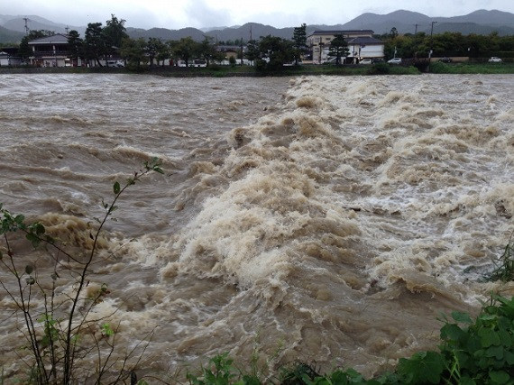
メカニズム
台風・集中豪雨等により河川が増水し、堤防を越えた水が沿岸に被害を与える。
土砂災害
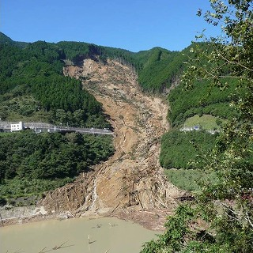
（写真提供：気象庁ウェブサイト）
メカニズム
大雨によって地盤が軟らかくなり、がけ崩れや地すべり、土石流をともなう。
前触れ
・がけ崩れ
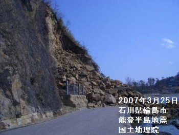
（写真提供：国土地理院ウェブサイト）
がけからの水が濁る。
がけにひび割れが入る。
小石がパラパラと落ちてくる。
・地すべり
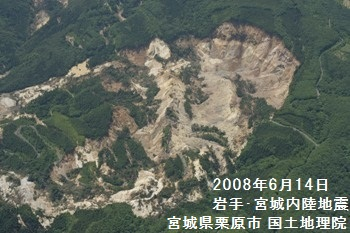
（写真提供：国土地理院ウェブサイト）
地面にひび割れができる。
沢や井戸の水が濁る。
斜面から水がふき出す。
・土石流
山鳴りがする。
雨が降り続いているのに川の水位が下がる。
川の流れが濁ったり流木がまざり始める。
高 潮
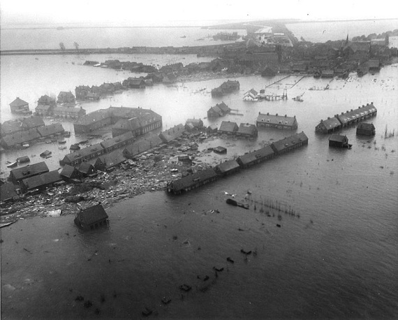
（1953年、北海南岸での高潮、オランダ南部ゼーラント州、Wikipedia：パブリック・ドメイン）
メカニズム
台風や低気圧の接近により、海面が上昇し、大波が沿岸部に押し寄せる。
竜 巻
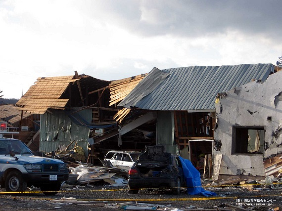
（写真提供「災害写真データベース」、北海道佐呂間町の竜巻による災害（2006年））
現 象
発達した積乱雲によって作られる大気中の激しいうずまきのこと。
特 徴
・速さと威力
秒速100ｍを超える猛烈な風で、周りのあらゆるものを吹き飛ばす。
・年中発生
年間を通じて、いつでもどこでも発生する。
・日中に注意
夜間よりも日中の方が多い。
発生したら…
・屋内
窓ガラスが割れる危険があるので、窓から離れる。
・屋外
頑丈な建物に避難する。
頑丈な構造物に頭を抱えてうずくまる。
・車内
車も飛ばされる危険があるので、車内でも頭を抱えてうずくまる。
風水害防災INSIGHT
風水害は地震などの予想が難しい災害とは異なり、事前に情報収集ができていれば、余裕を持って行動できる。
・まずは天気予報の確認から！
日頃から天気予報を確認する習慣をつける。
・危険な時は中止の決断を！
旅行で山や海に行くなどの計画がある時は、天気予報を確認し、危険な場合は中止にする。
・家の周りの危険個所をチェック！
自治体の「ハザードマップ」から、家の周りの危険個所をチェックする。
火山災害
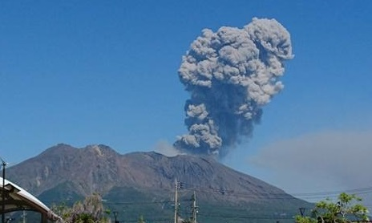
種 類
・火砕流、火山灰や噴石
火砕流は高温の火山ガス・溶岩片・火山灰などが一団となって、斜面を流れ下る現象のことをいう。
火山灰は噴火の大きさや風の強さにより、1,000km以上も遠くまで飛ぶことがある。
また、火口から大きな岩や医師が放出されることがあり、これを噴石といい、あたると人や家屋に大きな被害をもたらすことがある。
・溶岩流
火口からあふれ出した溶岩流は、約600～1,100℃と高温であり、田畑や家屋などが焼きつくされ、埋まってしまう。
・土石流
噴火によって火口付近の積雪がとけたり、火山灰が積もったところに雨が降ったりすると、水が地中にしみこみにくいため、土石流が発生することがある。
・地震（噴火活動に伴って発生）
噴火活動にともない、大きな地震が発生することがある。
・火山ガス
火口などからは、硫化水素、二酸化硫黄、二酸化炭素などの有毒な成分を含んだ火山ガスが放出される。
日本は「環太平洋造山帯」という火山ベルトに位置しており、活火山（噴火活動が盛んな火山のこと。）は110を数えます。
火山災害防災INSIGHT
山に出かける時は火山情報をチェックする。
噴石からは岩陰や丈夫な建物に避難する。
行政機関の避難指示に従って行動する。
火山ガス（有毒性）にも注意する。
雪 崩

（雪崩の瞬間、Wikipedia：パブリック・ドメイン）
現 象
山に積もった雪が崩れ落ちる。
雪崩被害の多くは「表層雪崩」によるものです。
表層雪崩
気温の低い状況で、積雪面の上に数10cm以上の大雪が降った場合に、新積雪層が滑り落ちる。
降雪中・降雪後・昼夜関係なく、大規模に動き出す。
雪崩防災INSIGHT
・立ち入り禁止場所には入らない。
・春先は雪崩がおきやすい季節なので、注意する！
・時速100kmをこえるスピードなため、逃げ切ることは不可能！
・巻き込まれても、あきらめない！
呼吸器官の確保、岩や樹木にしがみつく。
・大声を出して、仲間に知らせる。
落 雷
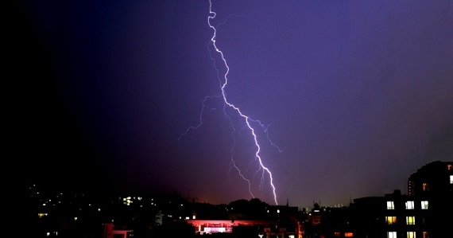
現 象
雷は雷雲の位置しだいで、平野、海面、山岳など、ところかまわず落ちる。
落雷防災INSIGHT
外にいる時
・高い木下は危険！
葉先から2m以上は離れる。
・軒先での雨宿りは危険！
建物の中に避難する。
・テニスラケットや釣竿（金属性、カーボンファイバー性）は手放して避難する
・乗り物の中は安全！
家にいる時
・テレビ等電化製品から距離を置く！
・落雷によりパソコン等が壊れる可能性があるので、注意する！
火 災
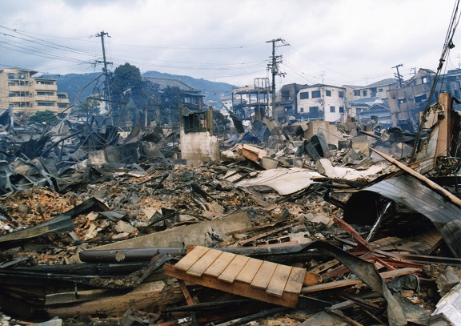
（写真提供：神戸市）
予防が第一
家で注意する箇所をまとめました。
・コンセント
ほこりやゴミがたまっていると、そこに火がつくことがあるので、コンセントの周りは日頃から掃除しておく。
たこ足配線や古いコンセントは熱をもつことがあるので、注意する。
・たばこ
消し忘れや灰皿に吸い殻がたくさんたまっていると危険！寝たばこや火の不始末に注意する。
・水槽やペットボトルなど
太陽光線があたり、レンズの働きをして、発火することがある。
・コンロ
てんぷらなど、揚げ物を調理する時は、目を離さないこと。また、コンロの火が衣服などにつかないように注意する。
・ライター、マッチ
お子さんがいる家庭では、手が届かない所にしまっておく。
以下の資料をもとに仁志が加工・編集して作成しました。
・わたしの防災サバイバル手帳、消防庁
・チャレンジ！防災48、消防庁
×
どこにいる？
地震が発生した時、あなたはどこにいるでしょうか？
"その時" どう行動したら良いのでしょうか？
参考文献を基に様々なシーンを想定し、再構成してみました。
皆で考えてみましょう！
以下の資料をもとに仁志が加工・編集して作成しました。
・防災マニュアル、消防庁
×
日常生活中
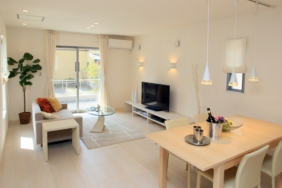
あなたは、リビングで日常生活を送っています。
突然、「地震」に襲われました。
どう行動しますか？
………
みんなで考えましょう！
Please Press「THEORY」
机やテーブルの下にもぐり、自分の身を守る。
動く時は、スリッパ等を履く。ガラス片等で足を怪我する可能性がある。
戸を開けて出入り口を確保する。家の中に閉じ込められる恐れがある。
×
台所
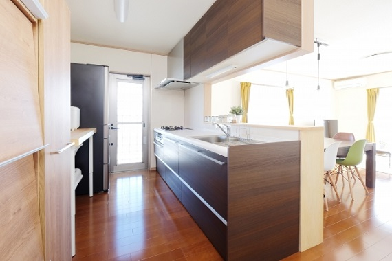
あなたは、台所で料理をしています。
突然、「地震」に襲われました。
どう行動しますか？
………
みんなで考えましょう！
Please Press「THEORY」
テーブルの下にもぐり、身の安全を確保する。
慌てて火を消そうとすると、やけどする危険があるので、揺れがおさまるのを待ってから火を消す。
食器棚や冷蔵庫が倒れてくるだけではなく、中身が飛び出してくる事があるので、注意する。
×
お風呂・トイレ
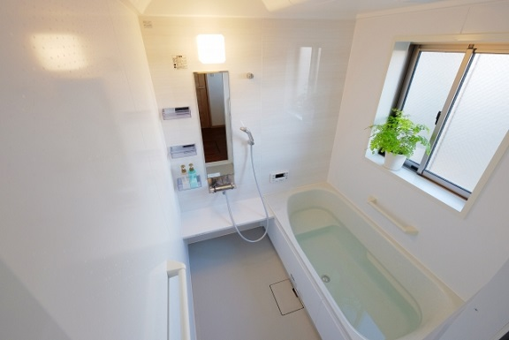
入浴中やトイレに入っている時に、地震にあったら…
どう行動しますか？
………
みんなで考えましょう！
Please Press「THEORY」
風呂場では、タイルや鏡、トイレでは水洗タンクが落ちてくることがあるので、注意する。
入浴中は、鏡やガラスの破損による怪我に注意する。
浴槽の中では、風呂のふた等をかぶり、頭を守る。
揺れがおさまってから、避難する。
×
寝ている時
寝ている時に、地震にあったら…
どう行動しますか？
………
みんなで考えましょう！
Please Press「THEORY」
揺れで目が覚めたら、寝具にもぐりこむか、ベッドの中にうずくまる。
枕元にはスリッパ、懐中電灯、ラジオやスマートフォンを置いておく。
寝室にタンス等を置く場合は、天井と固定しておき、倒れないようにする。
×
マンション
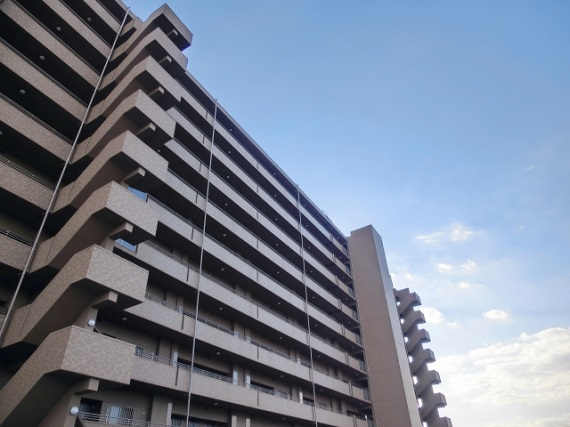
マンションにいる時に、地震にあったら…
どう行動しますか？
………
みんなで考えましょう！
Please Press「THEORY」
机の下にもぐり、揺れがおさまるのを待つ。
高層階では、揺れの幅が大きくなる。
非常口の確認をしておく。
×
職場・オフィス
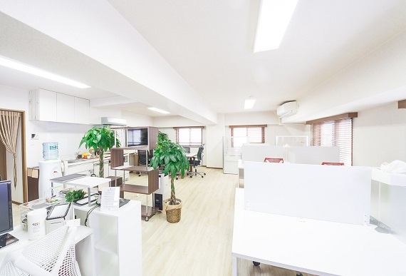
職場やオフィスで働いている時に、地震にあったら…
どう行動しますか？
………
みんなで考えましょう！
Please Press「THEORY」
窓ガラスが割れることがあるので、窓辺から離れる。
OA機器の落下に注意する。
日頃から整理整頓を行い、職場環境を綺麗に心がける。
避難時はエレベーターを使用しないようにする。
×
スーパー・デパート
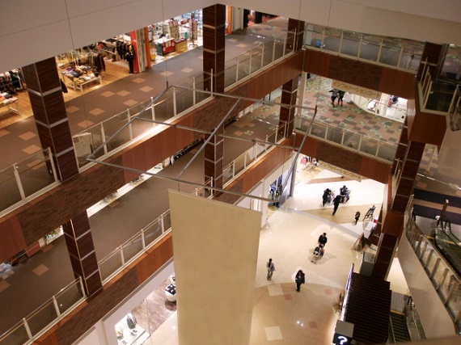
スーパーやデパートで買い物中に、地震にあったら…
どう行動しますか？
………
みんなで考えましょう！
Please Press「THEORY」
バックや買い物かごなどで頭を保護し、ショーケースなど倒れやすいものから離れる。
ガラス製品や瀬戸物、その他、陳列棚の商品などの落下・転倒に注意する。
エレベーターによる避難はしない。
×
映画館・劇場
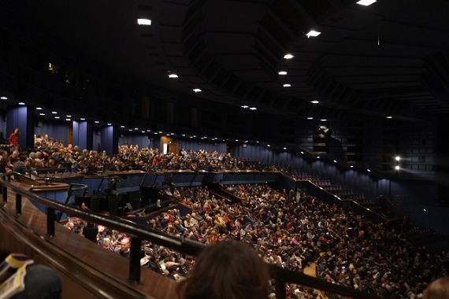
映画館や劇場で鑑賞中に、地震にあったら…
どう行動しますか？
………
みんなで考えましょう！
Please Press「THEORY」
バックなどで頭を保護し、座席の間に身を隠して、揺れが収まるのを待つ。
天井からの落下物や窓ガラス等に注意しながら、安全な場所に避難する。
停電しても誘導灯や非常灯がつくので、慌てずに、係員の指示に従う。
事前に避難口を確認しておく。
×
地下街
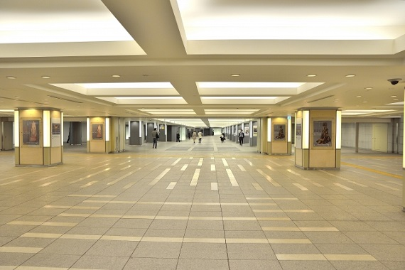
地下街にいる時に、地震にあったら…
どう行動しますか？
………
みんなで考えましょう！
Please Press「THEORY」
停電になっても、非常照明がつくまでむやみに動かないようにする。
地下街では６０ｍごとに非常口が設置されているため、一つの非常口に殺到せずに地上に落ち着いて脱出する。
脱出するときは、壁づたいに歩いて避難する。
×
学校
学校にいる時に、地震にあったら…
どう行動しますか？
………
みんなで考えましょう！
Please Press「THEORY」
教室内では、机の下に潜って落下物などから身を守り、慌てて外に飛び出すなど勝手な行動はせずに、教職員の指示に従う。
廊下、運動場、体育館などでは、中央部に集まってしゃがむ。
実験室などでは、薬品や火気に注意する。
通学路が危険なこともあるので、勝手に帰宅しない。
×
エレベーター
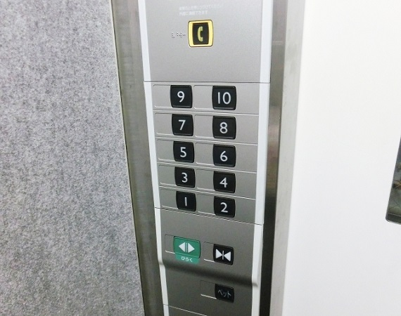
エレベーターの中で、地震にあったら…
どう行動しますか？
………
みんなで考えましょう！
Please Press「THEORY」
全ての階のボタンを押し、最初に停止した階でおりるのが原則！
ただし、停止した階で慌てておりるのではなく、階の状況を見極めるのも大切！
エレベーターに閉じこめられても、焦らず冷静になって「非常用呼び出しボタン」等での連絡を取る。
×
住宅地
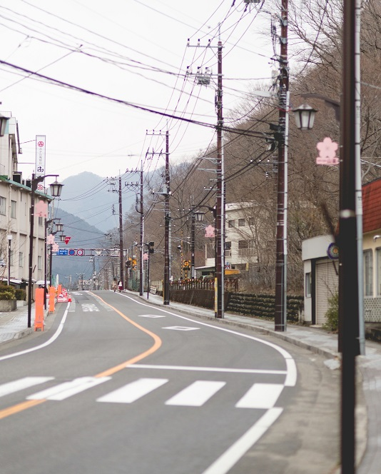
あなたは、住宅地を歩いています。
突然、「地震」に襲われました。
どう行動しますか？
………
みんなで考えましょう！
Please Press「THEORY」
住宅地の路地にあるブロック塀や石塀は、強い揺れで倒れる危険がある。揺れを感じたら塀から離れる。
電柱や自動販売機も倒れてくることがあるので、そばから離れる。
屋根瓦や二階建て以上の住宅のベランダに置かれているエアコンの室外機、ガーデニング用のプランターなどが落下してくることがある。頭の上も注意する。
強い揺れが起きると、耐震性能の低い住宅が倒壊する場合もある。これにより瓦礫や窓ガラスが道路内に散乱する可能性もあるので、揺れを感じたら周辺の状況に注意する。
×
オフィス街・中華街
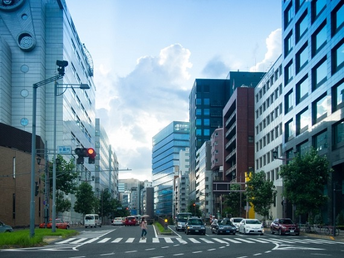
あなたは、オフィス街・中華街を歩いています。
突然、「地震」に襲われました。
どう行動しますか？
………
みんなで考えましょう！
Please Press「THEORY」
何はともあれ、頭上を保護する！
オフィスビルの窓ガラスが割れて落下すると、時速40～60kmで広範囲に拡散する。
ビルの外壁や張られているタイル、外壁に取り付けられている看板などが剥がれ落ちることもある。
街では、オフィス街には少ない店の看板やネオンサインなどの落下・転倒物が加わる。
鞄などで頭を保護し、できるだけ建物から離れる。
×
海岸
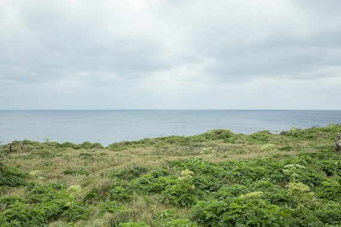
あなたは、海岸に来ています。
突然、「地震」に襲われました。
どう行動しますか？
………
みんなで考えましょう！
Please Press「THEORY」
一番恐ろしいのは津波。とにかく高い所に避難する！
津波は繰り返し襲って来て、第一波の後にさらに高い波が来ることもある。いったん波が引いても絶対に戻ってはいけない。
避難標識が整備されている場合には避難する際の目安になる。
水浴中の場合は、監視員やライフセーバーがいる海水浴場では指示に従って避難する。
警報などが出ていないか、正しい情報を入手する。
→
津波の防災情報
×
川べり
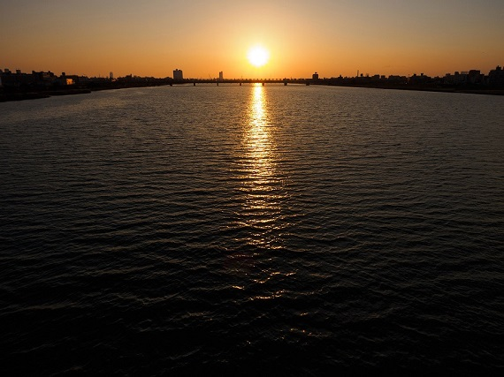
あなたは、川べりに来ています。
突然、「地震」に襲われました。
どう行動しますか？
………
みんなで考えましょう！
Please Press「THEORY」
津波は水を湛えている川を遡る！
流れに沿って上流側へ避難しても津波は追いかけてくる。
流れに対して直角方向に素早く避難する。
×
山・丘陵地
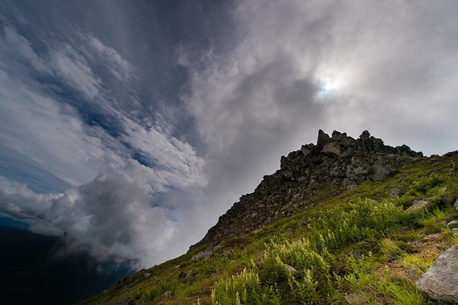
あなたは、山登りをしています。
突然、「地震」に襲われました。
どう行動しますか？
………
みんなで考えましょう！
Please Press「THEORY」
落石に注意し、急傾斜地など危険な場所から遠ざかる！
登山やハイキングで山にいる時に強い揺れに襲われた場合には、まず落石から身を守る。
地震で地盤がゆるみ、崩れやすくなっている可能性があるため、崖や急傾斜地など危険な場所には近づかない。
×
運転中
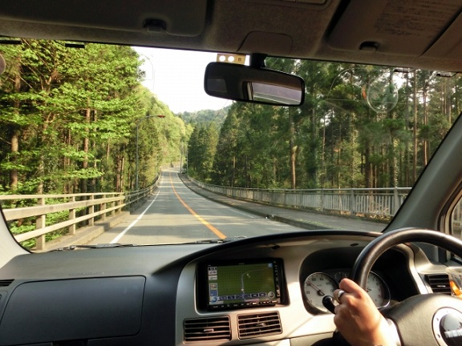
あなたは、車を運転しています。
突然、「地震」に襲われました。
どう行動しますか？
………
みんなで考えましょう！
Please Press「THEORY」
揺れを感じたら
①急ブレーキは禁物！ハンドルをしっかり握り、前後の車に注意しながら徐々にスピードを落とし、道路の左側に停車する。
②エンジンを切り、揺れがおさまるまでは車外に出ず、カーラジオやスマートフォンから情報を入手する。
③避難の必要がある場合は、車のキーはつけたままにし、ドアをロックしないで、窓を閉める。
④連絡先を見えるところに書き、車検証などの貴重品を持ち、徒歩で避難する。
車での避難は、緊急自動車などの妨げになる。
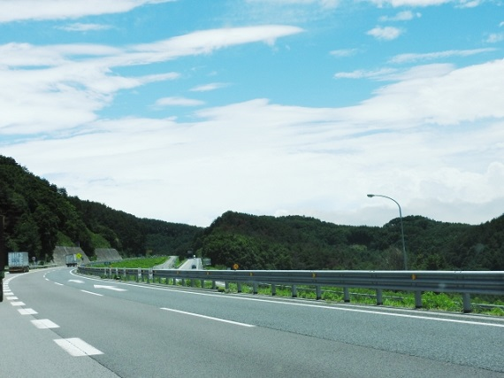
高速道路では、普通の道路を走行中の対処に加え、以下の点にも留意する。
①高速走行しているのでハザードランプを点灯させ、前後の車に注意を喚起する。
②高速道路では約１ｋｍごとに非常口を設けているので、徒歩で地上に脱出することができる。
×
鉄道
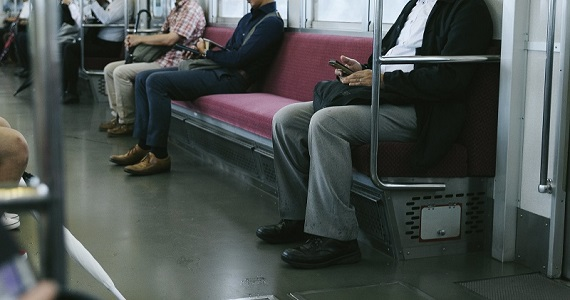
あなたは、電車に乗っています。
突然、「地震」に襲われました。
どう行動しますか？
………
みんなで考えましょう！
Please Press「THEORY」
強い揺れを感知すると電車は緊急停車する！
座席に座っている場合には、低い姿勢をとって頭部を鞄などで保護し、立っている場合には手すりやつり革をしっかり握って転倒しないようにする。
停車後は、乗務員の指示に従う。
×
新幹線
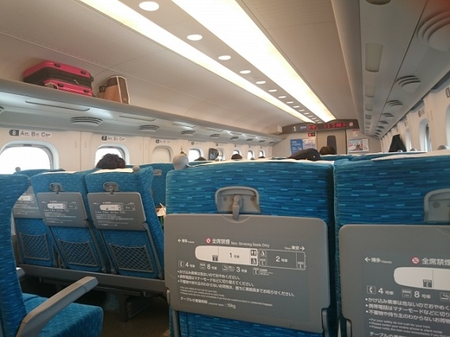
あなたは、新幹線に乗っています。
突然、「地震」に襲われました。
どう行動しますか？
………
みんなで考えましょう！
Please Press「THEORY」
新幹線は早期地震検知警戒システム（ユレダス）が作動して緊急停車する！
高速走行しているので、座席に座っている場合には、前に飛び出さないように座席の間に体を隠し、立っている場合には手すりをしっかり握って転倒しないようにする。
停車後は、乗務員の指示に従う。
×
地下鉄
あなたは、地下鉄に乗っています。
突然、「地震」に襲われました。
どう行動しますか？
………
みんなで考えましょう！
Please Press「THEORY」
震度５弱程度の揺れを観測した場合に運転を停止し、線路途中なら安全を確認し、低速で最寄りの駅に向かう！
座席に座っている場合には、低い姿勢をとって頭部を鞄などで保護し、立っている場合には手すりやつり革をしっかり握って転倒しないようにする。
停電になっても非常灯が1時間程度は点灯するので、慌てずに行動する。
地下鉄によっては高圧電線が線路脇に設置されているので、勝手に線路に飛び降りると危険！
停車後は、乗務員の指示に従う。
×
バス
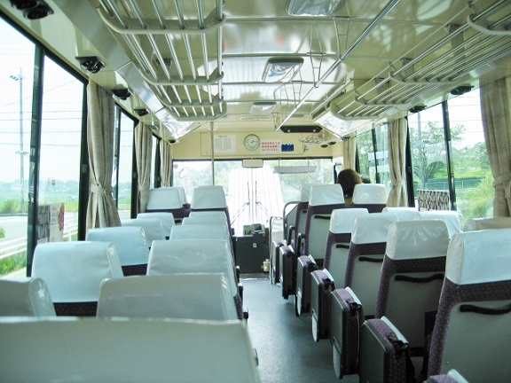
あなたは、バスに乗っています。
突然、「地震」に襲われました。
どう行動しますか？
………
みんなで考えましょう！
Please Press「THEORY」
強い揺れを感じた場合に、危険を回避するために急ブレーキが踏まれることがある！
座席に座っている場合には、低い姿勢をとって頭部を鞄などで保護し、立っている場合には手すりやつり革をしっかり握って転倒しないようにする。
停車後は、乗務員の指示に従う。
×
身の安全の確保
まずは、状況を確認し身の安全の確保を最優先する。慌てて行動すると思わぬ怪我をする恐れがあるので、冷静になることを心がける。
揺れが収まったら、戸や窓を開ける等し、出口の確保に努めましょう！
×
避難の判断
震災後では、様々なデマや憶測が飛び交う。
正しい情報に基づいた判断を！あなたの運命を左右する。
心に留めておきましょう！
避難勧告が出されたら、避難する。また、勧告がなくても危険を感じたら避難する。
×
避難の行動
家を出る時
外に出る時も周囲の確認を！ガラスや瓦などが落ちてくる可能性がある。
家のブレーカーを切り、ガスの元栓を閉める。
近所の方々にも声をかけ、安否確認を！
火災に遭遇したら…
火災では煙が死亡要因の多くを占めている。冷静な避難行動を！
火災報知設備の警報を聞いたときは、状況を確認するとともに、速やかな行動を心がける。
煙が部屋や廊下に充満してきた場合は、ハンカチやタオルなどで口・鼻をしっかり覆い、煙を吸わないよう姿勢を低くして避難する。
避難方法
原則、徒歩で避難する！車を使うと渋滞を引き起こし、消防・救急活動などに支障を来す。
最寄りの避難所、避難場所に避難する。
×
救出・援護
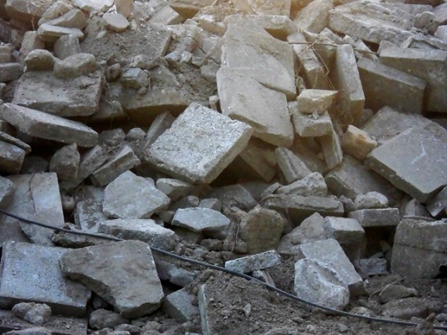
災害においては、必ずしも全員が無事に逃げられるとは限りません。早朝・深夜に災害が起きて、逃げ遅れてしまったり、洪水が発生し、家に孤立してしまうことも想定されます。助けを求めたり、救出・援護を行うことも大切です。
助けを求めるとき
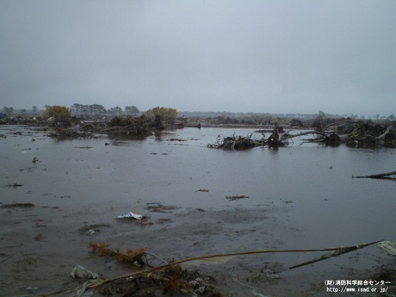
（写真提供「災害写真データベース」、津波により浸水した農地（2011年））
洪水が発生し、家の中に孤立したとき、救助隊に助けを求める必要があります。以下を参考にしてください。
シーツ、カーテン、バスタオルなど大きな布を屋根やベランダへ掲げる。救助隊の目印になる。
声を出してもかき消されて聞こえない可能性がある。タオル、洋服など目立つ色のものを大きく振って、助けを求める。
外からは家の中の状況が分からないため、油性ペンで上記の大きな布に「けが人あり」「子供います」「９０代１人動けません」など、簡潔に書いておくと有効。
ゴミ袋、レジャーシートは雨よけ、保温になるので、日頃から確保しておく。
救助の際に洋服や腕に「名前、連絡先、持病」を書いておく。優先的に救助されて離れたときに安心。
お薬、お薬手帳を持っておく。
ブラックアウト（大規模停電）対策
救助を待つ間、停電により明かりがない場合があります。ペットボトルとスマートフォンで明かりの代用が可能です。
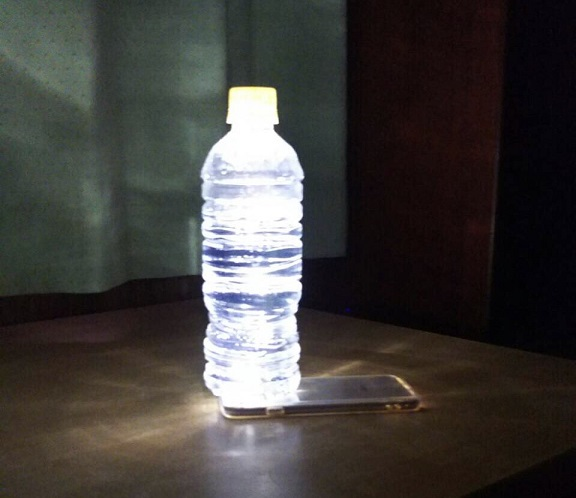
初期消火
火災になった場合は、周りの人に大きな声で助けを求めるとともに、手近にある消火器などで初期消火を行う。
初期消火ができず天井まで火が広がってしまったら、自分や他の住人の安全を確保するとともに、消防隊や消防団へ助けを求める。
消防隊が到着するまで、近所の人たちや自主防災組織の人などと協力して、近隣の住民（特に子供や高齢者などの要援護者）の避難を確認し、バケツリレーなど火災の延焼阻止を試みる。
救出・救護活動
災害が大きくなると、負傷者が多くなり、また道路が通行困難となっているために消防署などによる救出活動が間に合わない場合がある。軽いケガなどの処置は、みんながお互いに協力し合って応急救護を行う。
建物の倒壊や落下物などの下敷きになった人がいたら、意識があるかどうかを確認し、声をかける。救出活動には危険が伴う場合があるため、複数で協力して行う。
以下の資料をもとに仁志が加工・編集して作成しました。
・防災マニュアル、消防庁
・わたしの防災サバイバル手帳、消防庁
×
何が必要？
防災対策を施す上で、何が必要になるでしょうか？
みんなで考えていきましょう！
家具を固定しよう！
阪神・淡路大震災が起きた際、犠牲者の方々の約８割が家具による窒息死、圧死というデータがあります。（平成16年版「防災白書」）
大地震が起きた時は、揺れが縦に揺れることが多く、重い家具でも飛んでくる恐れがあります。
タンスや食器棚など、家の中で大型の家具は固定して、動かないようにすることが大切です。
・家具転倒のメカニズム
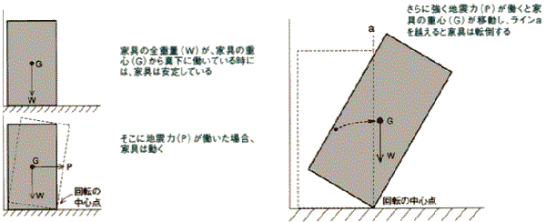
・家具の固定
 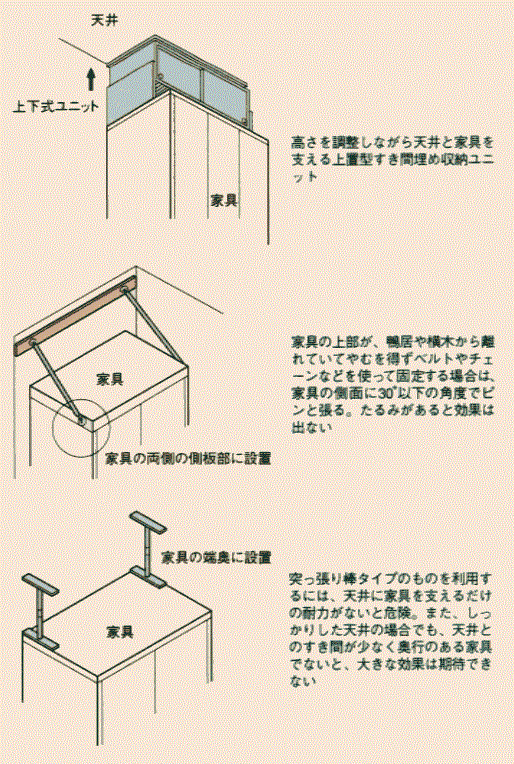
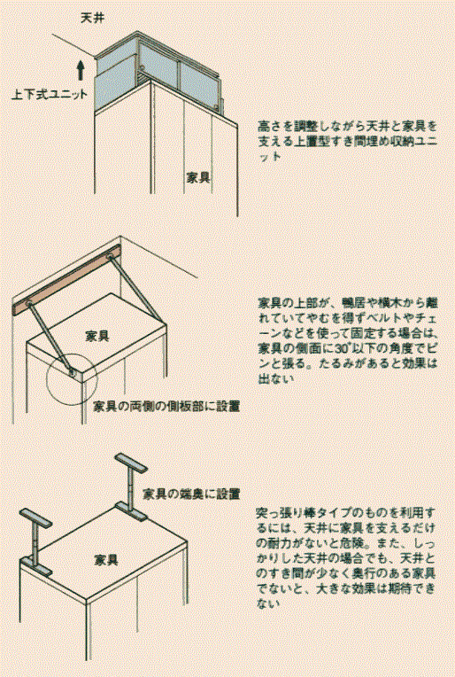
その家具、本当に必要ですか？
家具の固定は防災の基本ですが、そもそも家具がなくても収納できるような部屋が理想だと思います。
地震時に押しつぶされたりする危険性"そのもの"が無くなるからです。
スティーブ・ジョブズが物のこだわりが強く、部屋にほとんど家具が無かったというのもシンプルで部屋が広く使えて良いなと思います。
本人確認カード
避難時に本人確認をするためのカードです。PDFに印刷したり、スクリーンショットを撮りご自身のスマートフォンに保存しておき、避難時にご利用ください。
消火器の使い方
災害とともに火災が起きる可能性があります。初期消火が必要な時に備えて、消火器の使い方を覚えておきましょう。
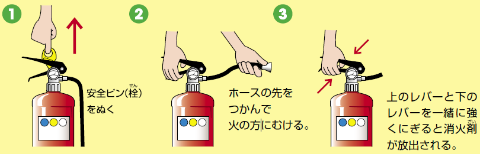
火のおこし方
真冬に災害が起きた際や遭難した時など、火をおこす必要に迫られる時があります。火のおこし方を覚えておきましょう。
１．火をつける材料を見つける。（落ち葉や枯草など）
２．虫メガネのレンズやビンの底などで火をおこす。
Wi-Fiの無料開放
平成28年4月に発生した熊本地震では、Wi-Fiの無料開放というサービスが行われました。具体的には、通信事業者が避難所を中心に無料公衆無線LAN（Wi-Fi）アクセスポイントを設置し、携帯電話事業者が災害用統一SSID「00000JAPAN」の運用を初めて実施し九州全域で約55,000のアクセスポイントを確保しました。（出典「平成28年版 情報通信白書」）
災害時には、携帯電話回線が混雑し、つながりにくくなるという障害が想定されるため、このようなサービスは非常に重要であると思います。
以下の資料をもとに仁志が加工・編集して作成しました。
・防災マニュアル、消防庁
・わたしの防災サバイバル手帳、消防庁
・地震による家具の転倒を防ぐには、消防庁
避難情報
自分の地域の避難情報を調べることは大切なことです。
いざ、避難するとなった時に、「どこに避難すれば良いのか？」と行動できなくなってしまいます。
そこで、指定緊急避難場所のマップを作成しました。
ご自身の地域の避難場所について、調べてみましょう！
地図から調べる
都道府県を選択すると地図画面に移動します。
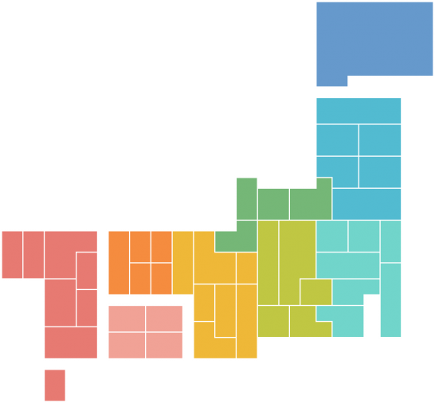
北海道・東北
関東
中部
近畿
中国・四国
九州・沖縄
北海道
青森県
岩手県
宮城県
秋田県
山形県
福島県
茨城県
栃木県
群馬県
埼玉県
千葉県
東京都
神奈川県
新潟県
富山県
石川県
福井県
山梨県
長野県
岐阜県
静岡県
愛知県
三重県
滋賀県
京都府
大阪府
兵庫県
奈良県
和歌山県
鳥取県
島根県
岡山県
広島県
山口県
徳島県
香川県
愛媛県
高知県
福岡県
佐賀県
長崎県
熊本県
大分県
宮崎県
鹿児島県
沖縄県
リストから調べる
検索フォームに都道府県、市町村、町字を入力し絞込み検索ができます。
※一部の自治体では、データ未整理のため、掲載されておりません。最新の情報は、自治体の公式サイトなどでもご確認ください。
参考：指定緊急避難場所データ 市町村別公開日・最終更新日
指定緊急避難場所
津波、洪水等による危険が切迫した状況において、住民等が緊急に避難する際の避難先として位置付けるものであり、住民等の生命の安全の確保を目的とするものです。
避難場所だけが避難場所ではない！
災害時に避難する場所は必ずしも避難所である必要は無いと思います。
親の所や娘・息子の所、親戚の家など、災害から離れた安全な場所であれば、それで良いと思います。
核家族化が進んでいる日本もこういう潜在的な問題がある気がします。
人間一人では生きられないから、人の繋がりを大事に生きていきたいものです。
通行止め情報
以下の資料をもとに仁志が加工・編集して作成しました。
・地理院タイル（http://maps.gsi.go.jp/development/ichiran.html）、指定緊急避難場所データ
・長野市 避難場所一覧（クリエイティブ・コモンズ・ライセンス表示4.0国際、http://linkdata.org/work/rdf1s6862i、2020年7月20日）、長野市
・通行止め情報、G空間情報センター
・日本の地方自治体一覧オープンデータ
気象情報
避難する時に、大気の状態を把握することも大切です。
最近ではゲリラ豪雨と呼ばれる局所的に降る大雨の現象もよく見られます。
「雨雲レーダー」では、大気の状態を調べることができます。
Ｗｉｎｄｙ
気象庁
※気象庁の更新に合わせて、画像を取得していますので、時々、通信に失敗する場合があります。少し時間をおいて、更新ボタンより、情報を更新すると画像が表示されると思います。
台風情報
下の画像をタップすると、気象庁のウェブサイトに遷移します。

天気予報
※日本気象協会へのリンクです。
警報・注意報
都道府県を選択すると、警報・注意報が表示されます。さらに、画像をクリックすると、気象庁のウェブサイトに遷移します。
「気象警報・注意報発表状況」（気象庁ウェブサイトより）
・警戒レベル５相当
大雨特別警報
|
・警戒レベル４相当
土砂災害警戒情報
高潮特別警報
高潮警報
|
・警戒レベル３相当
大雨警報（土砂災害）
洪水警報
高潮注意報
|
・警戒レベル２相当
大雨注意報
洪水注意報
高潮注意報
|
以下の資料をもとに仁志が加工・編集して作成しました。
・環境省熱中症予防情報サイト
・日本気象協会
・都道府県カラム
ハザードマップ
大雨では川が増水して洪水の被害が起きることがあります。また、土砂崩れなどの災害に見舞われる恐れもあります。
想定区域で家の周りの被害を想定しましょう。
※一部の自治体では、データ未整理のため、掲載されておりません。最新の情報は、自治体の公式サイトなどでもご確認ください。
洪水浸水想定区域（想定最大規模）
地図から調べる
０．５ｍ未満
０．５～３．０ｍ
３．０～５．０ｍ
５．０～１０．０ｍ
１０．０～２０．０ｍ
２０．０ｍ以上
現在地から調べる
解析結果は以下のとおりです。
解析結果
経度：度、緯度：度
標高：ｍ、最大浸水深：ｍ
現在地は、洪水データが整備されておらず、最大浸水深を測定できませんでした。
解析結果
経度：度、緯度：度
標高：ｍ、最大浸水深：不明
「地点別浸水シミュレーション検索システム」（浸水ナビ）
浸水想定区域図を電子地図上に表示するシステムです。このシステムのAPIを利用することで、GPSから洪水浸水想定区域（想定最大規模）の情報を文字でも配信できるようになりました。なお、解析には３分程度かかりますので、ご承知おきください。
土砂災害マップ
北海道・東北
関東
中部
近畿
中国・四国
九州・沖縄
北海道
青森県
岩手県
宮城県
秋田県
山形県
福島県
茨城県
栃木県
群馬県
埼玉県
千葉県
東京都
神奈川県
新潟県
富山県
石川県
福井県
山梨県
長野県
岐阜県
静岡県
愛知県
三重県
滋賀県
京都府
大阪府
兵庫県
奈良県
和歌山県
鳥取県
島根県
岡山県
広島県
山口県
徳島県
香川県
愛媛県
高知県
福岡県
佐賀県
長崎県
熊本県
大分県
宮崎県
鹿児島県
沖縄県
・急傾斜地の崩壊区域
傾斜度が３０°以上ある土地が崩壊する自然現象
特別警戒区域
警戒区域
|
・土石流警戒区域
山原が崩壊して生じた土石等又は渓流の土石等が一体となって流下する自然現象
特別警戒区域
警戒区域
|
・地すべり警戒区域
土地の一部が地下水等に起因して滑る自然現象又はこれに伴って移動する自然現象
特別警戒区域
警戒区域
|
| ・土石流危険渓流 | |
| ・急傾斜地崩壊危険箇所 | |
| ・地すべり危険箇所 | |
| ・雪崩危険箇所 | |
以下の資料をもとに仁志が加工・編集して作成しました。
・ハザードマップポータルサイト
・「地点別浸水シミュレーション検索システム」（浸水ナビ）
×
浸水・積雪ＡＲ
浸水・積雪ARは自宅が何ｍ浸水する（何ｃｍ積雪する）といった場合にAR機能を用いて、どこの高さまで浸水するか（積雪するか）、見積もる時に使用できます。
使い方
・家から５～６ｍ離れてスマホを向ける。
・「ARをONにする」ボタンをタップする。
・右のメーターで高さを測る。
・「標高を調べる」ボタンから現在地の標高も調べられる。
×
医療・福祉情報
目 次
災害拠点病院マップ
災害拠点病院マップを作成しました。
災害拠点病院
地震・津波などの災害時に災害医療を提供できる機能が備わった病院です。
避難生活
温度・環境管理
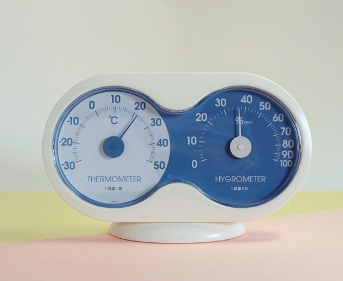
夏場は涼しく、冬場は暖かくなるよう、室内環境を整える必要があります。
暑いときは夏服の利用や、冬場は各避難所に毛布を配備するなど、衣類の備えが必要です。
体育館において、日差しが強い時は、カーテンを利用し、寒い時は扉の開閉を最小限にするなど、その場その場の環境を整えましょう。
身の回りを整理整頓し、通路確保、転倒予防、段差への注意喚起の工夫をしましょう。
衛生管理

避難所内でのゴミを捨てる場所を定めて、封をし、はえ・ネズミやゴキブリの発生を防止しましょう。
定期的に、避難所全体を清掃し、食べ物や残飯などを適切に管理しましょう。
夏場は避難所の出入り口や窓に、細かな網を張る、殺虫剤を使用するなど、防虫対策を取りましょう。
避難所生活が長引くと敷きっぱなしの毛布等寝具が汚れ、湿気を含み、雨天の多くなる梅雨時にはダニなどが発生しやすくなります。日中は布団を敷きっぱなしにせず、晴れた日には日光干しや通風乾燥を行うようにしましょう。
水分補給
様々なストレスやトイレの整備が原因で、避難者は水分を取る量が減りがちになります。特に高齢者は脱水に気づきにくく、脱水は尿路の感染症や心筋梗塞、エコノミークラス症候群などの原因にもなるため、しっかりと水分補給を心がけてください。
飲料にはペットボトルでのミネラルウォーター又は煮沸水を使用し、生水の使用は避けましょう。
給水車による汲み置きの水は、出来るだけ当日給水のものを使用しましょう。
井戸水や湧き水をやむを得ず使用する時は、煮沸等殺菌することに気を付けましょう。
感染症対策
避難所での集団生活では、下痢などの消化器系感染症や、風邪やインフルエンザなどの呼吸器系感染症が流行しやすくなります。
こまめに手洗い、うがいをすることが大切です。
水が出ない場合は、擦り込み式エタノール剤やウェットティッシュを世帯単位で配布することが望ましいです。
発熱・せきなどの症状がある方は、軽い症状であったとしても、マスクを着用しましょう。
下痢の症状がある方は、脱水にならないよう水分補給をしましょう。また、手洗いも必ずしてください。
がれき撤去の際には、長袖・長ズボン・手袋（皮手袋）の上に厚手のゴム手袋をしたり、厚底の靴を履くなどしてけがを防ぎ、感染症にかからないようにしましょう。
下痢、嘔吐、発熱患者が同時期に複数の方に発生した場合には保健所に連絡しましょう。
エコノミークラス症候群
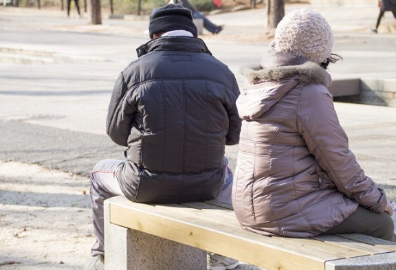
エコノミークラス症候群
食事や水分を十分に取らない状態で、車などの狭い座席に長時間座っていて、足を動かさないと、血行不良が起こり、血液が固まりやすくなります。その結果、血の固まり（血栓）が足から肺などへとび、血管を詰まらせ肺高速などを誘発する恐れがあります。この症状をエコノミークラス症候群といいます。
このような危険を予防するために、定期的に体を動かし、十分な水分を取るようにしてください。
アルコール、コーヒーなどは利尿作用があり、飲んだ以上に水分となって体外に排出されるため避けましょう。
また、禁煙はエコノミークラス症候群の予防においても重要です。
胸の痛みや、片側の足の痛み・赤くなる・むくみがある・しびれているなどの症状がある方は早めに医療機関に受診してください。
粉じん予防
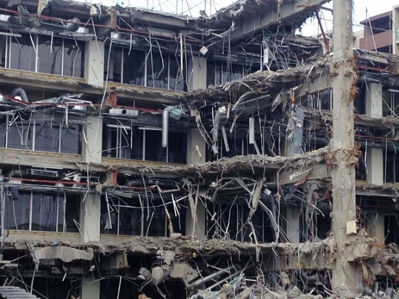
家屋などが倒壊すると、コンクリートや断熱と耐火被覆に用いられた壁材などが大気中へ舞ったり、土砂などが乾燥して細かい粒子となります。これら粉じんを長期間吸い込んだ場合、肺の末梢の細胞である肺胞に蓄積し、「じん肺」という病気にかかる可能性があります。
「じん肺」を根治する方法はないため、予防処置をとることが重要です。
１）粉じんの吸入を防ぐ
・使い捨て式防じんマスクなどを着用する。
・粉じんが付着しにくい服装を選ぶ。
・外出から帰ったらうがいをする。
２）粉じんの発生を抑える
・粉じんの発生する場所などをふたなどで覆う。
・散水する。（水をまいたり、粉状のものはあらかじめ水で濡らす。
３）粉じんを除去する。
・廃棄装置、除じん装置がある場合には、これらを使用する。
４）外気で粉じんを薄める。
５）作業後、咳、痰、息切れが続く人を見かけた場合は、医師・保健師などに相談することを勧める。
マスクの着用を！
粉じんが舞い上がるような環境では、マスクを用いることが必要です。防じんマスクやN９５マスクなどが売られています。例え、暑い季節であっても、マスクを着用するようにしましょう。
慢性疾患
慢性疾患の中には、治療の継続が特に欠かせない病気があります。人工透析を必要とする慢性腎不全、インスリンを必要とする糖尿病などの方は、治療の継続が必須ですので、早めに医療機関を受診してください。
食中毒予防
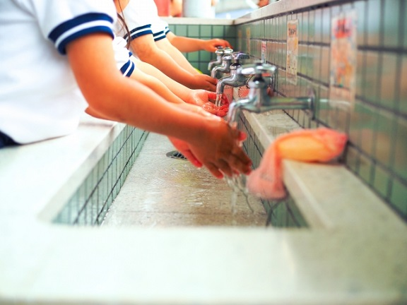
夏には食中毒が起こりやすくなります。また、冬でもノロウィルスなどによる食中毒が起こるため、季節を問わず食品の衛生管理に気をつけましょう。
届いた物資を加工したり、火を通すためにも、調理場所の確保と衛生管理を行いましょう。
食事の前やトイレ後は、流水で必ずよく手洗いしましょう。調理者は手指の消毒を心がけましょう。
配給食を出す場合には、食品の賞味期限、消費期限を確認しましょう（必要以上に保管しない）。
配った食品は早めに食べて、残った物は回収し破棄しましょう。
食料は、冷暗所での保管を心がけるなど、適切な温度管理を行いましょう。
加熱が必要な食品は中心部までしっかり加熱しましょう。
調理器具等は使用後にできるたけ洗浄しましょう。
下痢や嘔吐等の症状がある方は、食品を取り扱う作業をしないようにしてください。
AEDについて
概要
自動体外式除細動器（ＡＥＤ）については、平成16年7月に救命の現場に居合わせた市民による使用の取扱いを示して以降、国内において急速に普及し、AEDを用いた救命事例が多数報告されています（平成26年時点での販売累計：約63万台）。
AEDマップ
日本全国に設置されているAEDの情報をマップ上に表示されています。もしもの際、すぐにAEDを探せるように工夫されています。
ヘルプマーク
知っていますか？
ヘルプマーク
義足や人工関節を使用している方、内部障害や難病の方、または妊娠初期の方など、外見から分からなくても援助や配慮を必要としている方々が、周囲の方に配慮を必要としていることを知らせることで、援助を得やすくなるよう、作成したマークです。
対象者
義足や人工関節を使用している方、内部障害や難病の方、妊娠初期の方など、援助や配慮を必要としている方
災害時の対応
災害時は、安全に避難するための支援をお願いします。
視覚障害者や聴覚障害者等の状況把握が難しい方、肢体不自由者等の自力での迅速な避難が困難な方がいます。
以下の資料をもとに仁志が加工・編集して作成しました。
・災害医療、厚生労働省
・「避難所生活を過ごされる方々の健康管理に関するガイドライン」について
・ヘルプマーク、東京都福祉保健局
×
統計からみる防災
防災に関する統計情報や各種資料をまとめました。
違う角度から防災を考えてみましょう！
自助・共助・公助
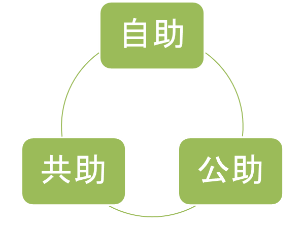
・自助…自分の身は自分で守る
・公助…行政機関が援助する
・共助…地域住民一体となって助け合う
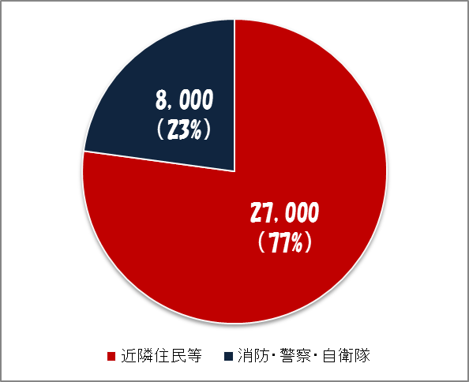
阪神・淡路大震災における救助の主体と救出者数
（出典「平成26年度防災白書」）
グラフを見ると、80％近くの方々が「共助」により助けられていることが分かります。
東日本大震災では、市役所等が被災に会い、行政機関が麻痺してしまいました（公助の限界）。
巨大地震では、行政機関そのものが麻痺し、機能しなくなることも想定されることから、
地域住民同士で助け合うことがいかに大切だと思います。
高齢社会
東日本大震災では、亡くなられた方々のうち、60歳以上の高齢者は66.1％を占めています。（高齢社会白書_平成25年版）
高齢社会となっている日本において、高齢者の方々の命をいかに守るかが重要になっています。
南海トラフの巨大地震モデル
内閣府の「南海トラフの巨大地震モデル検討会」にて、議論されたマップデータです。
近い将来、東海・東南海地震が起きることが予測されています。
自分達が住んでいる地域では、どの規模の揺れになるのか等、予め心構えしておくことも大切です。
ぜひ、確認してみてください。
（出典「内閣府 南海トラフの巨大地震モデル検討会」）
以下の資料をもとに仁志が加工・編集して作成しました。
・平成26年版 防災白書、内閣府
・平成28年版 防災白書、内閣府
・G空間情報センター、強震断層モデル(1)データセットA
・高齢社会白書（平成25年版）、内閣府
×
作ろう！防災ガイド
我が家の防災対策のため、避難所の情報を掲載した防災マップや避難時に何を持っていくか等の情報を掲載できる防災ガイド作成ツールを作りました。
ご家族や友人と作ってみましょう！
使い方
・タイトルを考えましょう。
・地図、気づいたこと・危険個所、非常時持ち出しリストはドラッグして動かすことができます。
・PCでは、さらにサイズの拡大・縮小ができます。
・地図にはマーカー、ライン、ポリゴン（図形）が作図できます。自宅、避難場所、避難ルートを書いてみましょう。
・「リスト追加」ボタンを押すと、非常時持ち出しリストが追加されます。
・「印刷」ボタンを押すと、画面を印刷できます。
・自分だけの防災ガイドを作成できます。
・見本
・注意点
本ガイド作成は、私的利用に限らせていただきます。また、OpenStreetMap利用規約に沿って、利用してください。
開発者プロフィール
 斎藤 仁志
斎藤 仁志
名古屋大学理学部物理学科卒業
愛知県在住
ＩＴを用いて皆の暮らしのお役に立ちたい！自分に出来ることは何か…毎日奮闘中！
参考文献
・
気象情報を参考にさせていただきました。
・ぱくたそ
写真素材を使用させていただきました。
・災害写真データベース「一般財団法人消防防災科学センター」
災害写真を使用させていただきました。
・photo AC
写真素材を使用させていただきました。
・CMAN
アイコン素材を使用させていただきました。
・SYNCER
このサイトでＷＥＢに関する様々なことを学ばせていただきました。
・キノコログ
日本地図画像を用いたリンク表示を参考にさせていただきました。
この場をお借りして感謝申し上げます。ありがとうございました。仁志.
利用規約
この利用規約（以下，「本規約」といいます。）は，利用者の皆様がこの「防災INSIGHT」アプリ（以下、「本アプリ」といいます。）を利用する上での利用条件を定めるものです。利用者の皆様には，本規約に従って，本アプリをご利用いただきます。
第1条（適用）
本規約は，本アプリを利用する全ての利用者の皆様に適用されるものとします。本アプリを利用する全ての利用者の皆様は、この規約に同意されたものとみなします。
第2条（本アプリの利用について）
（1）利用料金
利用者の皆様は、本アプリを無料で利用できます。ただし、インターネットを利用しているので、インターネット通信料は利用者の皆様のご負担となります。
（2）アクセス解析
管理人「仁志」は利用者数を把握するため、アクセス解析を行っています。これは、ユーザの利用状況及びサーバの負荷状態を把握するために使用するものとし、それ以外の用途では用いません。
（3）GPSの利用
本アプリは、端末のGPSを利用し、現在地を把握することができます。GPSを利用しなくても、ご利用になれます。プライバシー保護の観点より、GPSの利用はご利用者様の責任のもと、ご利用ください。（プライバシーが気になる方は、GPSを利用しない方法でご利用ください。） また、管理人「仁志」は、GPS情報の収集等は一切行いません。
なお、GPSはネットワーク、端末にも記録が残ります。本アプリ以外の痕跡については、各ネットワーク事業者、端末事業者の規約に従って利用してください。
第3条（禁止事項）
本アプリの利用にあたり，以下の行為をしてはなりません。
（1）法令または公序良俗に違反する行為
（2）犯罪行為に関連する行為
（3）本アプリの運営を妨害するおそれのある行為
（4）他の利用者の皆様に関する個人情報等を収集または蓄積する行為
（5）他の利用者の皆様に成りすます行為
（6）本アプリを無断で転載、複製する行為
（7）反社会的勢力に対して直接または間接に利益を供与する行為
（8）その他，管理人「仁志」が不適切と判断する行為
第4条（本アプリの提供の停止等）
管理人「仁志」は，以下のいずれかの事由があると判断した場合，事前に通知することなく本アプリの全部または一部の提供を停止または中断することができるものとします。
（1）本アプリの更新を行う場合
（2）コンピュータまたは通信回線等が事故により停止した場合
（3）その他，管理人「仁志」が本アプリの提供が困難と判断した場合
管理人「仁志」は，本アプリの提供の停止または中断により，利用者の皆様または第三者が被ったいかなる不利益または損害について，理由を問わず一切の責任を負わないものとします。
第5条（免責事項）
本アプリにより生じた、いかなる損害も保障しません。利用者様の責任のもと、ご利用ください。
第6条（本アプリの変更等）
管理人「仁志」は，利用者の皆様に通知することなく，本アプリの内容を変更しまたは本アプリの提供を中止することができるものとし，これによってユーザーに生じた損害について一切の責任を負いません。
第7条（知的財産権）
本アプリ上のコンテンツの著作権は、仁志に帰属しており、著作権法によって認められている場合を除き、当該著作物を無断使用（複製、頒布、送信、譲渡、翻案など）することは禁止されています。利用者の皆様は、各サービスの利用規定、コンテンツライセンス条件に従い、許容された範囲内のみでご利用ができる権利を許諾されています。
第8条（利用規約の変更）
管理人「仁志」は，必要と判断した場合には，利用者の皆様に通知することなくいつでも本規約を変更することができるものとします。
第9条（準拠法）
本規約の解釈にあたっては，日本法を準拠法とします。
附則
2020年9月5日 GPSに関する条項追加
2017年6月17日 利用規約制定
使い方
画面構成
メインメニュー
基本構成は、以下の４画面です。
１．学習
防災のステージを「事前準備」「避難時」「帰宅後」「さらに詳しく」の４段階のコンテンツに分類してあります。
災害の種類や非常時の持ち出しリスト、浸水・積雪ARなど、防災について、幅広く学ぶことができます。
２．避難情報
日本全国の指定緊急避難場所をマップ化、リスト化しました。
避難する時の避難場所を検索することができます。
通行止め情報も載っていますので、実際に避難する時の参考にしてください。
３．気象情報
雨雲レーダーで大気の状態を知ることができます。
天気予報も載っているので、お出かけの際、雨具がいるかどうかの判断もできます。
４．浸水想定
日本全国の災害ハザードマップ（洪水、土砂災害）を調べることができます。
洪水ハザードマップでは、GPSから位置情報を把握し、現在地の最大浸水深を解析し、文字情報にて配信します。
この配信により、視覚障がい者の方々などのような目の不自由な方々もハザードマップの情報を知ることができます。
コンテンツ画面
右上に、 ホームボタン、× 閉じるボタンがあります。
ホームボタンはトップ画面に、閉じるボタンは１つ前の画面に遷移します。
使っていくうちに、操作方法が何となく分かるようなコンテンツ画面にしました。
速報ボタン
トップ画面には、速報ボタンがあります。
これは、地震速報など、災害の速報情報を閲覧することができます。
キーワード検索
トップ画面の下部には、キーワード検索があります。災害について、知りたい内容を入力することで、アプリ内の検索ができます。
インストール方法
Safariの場合
・共有ボタンから「ホーム画面に追加」をタップします。
・「OK」を押すとホーム画面にアイコンが表示されます。
以上でインストール完了です。
Google Chromeの場合
・設定ボタンから「ホーム画面に追加」をタップします。
・「OK」を押すとホーム画面にアイコンが表示されます。
以上でインストール完了です。
気象用語辞典
防災に関する用語をまとめました。
以下の資料をもとに仁志が加工・編集して作成しました。
・気象用語、気象庁
検索結果